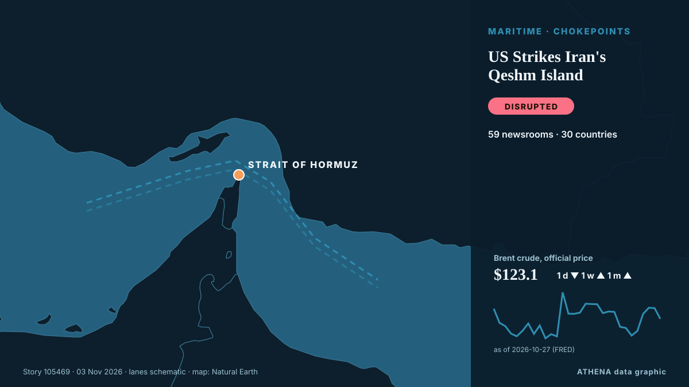

ATHENA Glaux Intelligences — تحليل الأخبار العالمية — كل رقم مُفسَّر
أخبار العالم، مدقّقة عبر الدول
يتابع ATHENA Glaux مئات الوسائل الإعلامية حول العالم ويجمع تقاريرها في أحداث. لكل حدث ترى عدد الوسائل الإعلامية وعدد الدول التي غطته، ومن نشره أولاً، ودرجة خطر مع أسبابها — بتحديث كل 15 دقيقة، وبسبع لغات.
مباشرة من الأخبارAFC Postpones 2027 Asian Cup in Saudi Arabia Amid Regional Security Concerns28 مصدرًا · 20 دولة · الخطر 0.0 · المصادر: Sportstar, Shafaq News (English)

الجغرافيا السياسيةUS Strikes Iran's Qeshm Island
The Wall Street Journal reported the attack, describing it as the latest of a series of limited strikes Washington has secretly carried out against Iran in recent weeks. من Free Malaysia Today
تُعرض العناوين بالإنجليزية كما نُشرت.
The top 10 things to watch for in the US midterm elections
And what it could all mean for New Zealand. من RNZ National
US delivery of 500 Patriot missiles to Ukraine will span 3 years starting in 2030
NATO Supreme Allied Commander Europe General Alexus Grynkewich said the United States continues to supply Ukraine with Patriot interceptor missiles, as well as weapons packages paid for by European… من Ukrinform (English)

اليوم بالأرقام
| 11:00 | 809 |
|---|---|
| 12:00 | 925 |
| 13:00 | 778 |
| 14:00 | 853 |
| 15:00 | 894 |
| 16:00 | 806 |
| 17:00 | 907 |
| 18:00 | 560 |
| 19:00 | 623 |
| 20:00 | 406 |
| 21:00 | 441 |
| 22:00 | 455 |
| 23:00 | 381 |
| 00:00 | 462 |
| 01:00 | 300 |
| 02:00 | 422 |
| 03:00 | 220 |
| 04:00 | 512 |
| 05:00 | 540 |
| 06:00 | 646 |
| 07:00 | 463 |
| 08:00 | 771 |
| 09:00 | 1659 |
| 10:00 | 891 |
خطر أحداث اليوم
Oleshky ceasefire expires, Ukraine evacuates civilians from parts of Kherson region
Nov 1 - Ukraine's military said it evacuated 167 people from threatened areas of southern Kherson region on Sunday as a temporary local ceasefire expired — two days after buses carried residents out… من The Straits Times
UK PM Burnham says he is ‘open’ to formal apology for slavery, but rules out reparations
At least 12.5 million Africans were abducted and sold into slavery. من Express Tribune
Coalition Destroys 5 Houthi Ballistic Missiles, 4 Drones Fired at Saudi Arabia
Riyadh: Saudi forces on Tuesday intercepted a ballistic missile aimed at the kingdom's capital, said a spokesman for the Riyadh-led coalition backing Yemen's government, after auth... من Oman Observer
الأوسع تغطية
إشارات ناشئة
- ارتفاع مفاجئ · نشطة الآنImran Khan
- ارتفاع مفاجئ · نشطة الآنJan
- ارتفاع مفاجئ · نشطة الآنQeshm Island
- اسم جديد في الأخبار · نشطة الآنKomyshuvakha
- ارتفاع مفاجئ · نشطة الآنBTC
تحذيرات رسمية
- Red notification for tropical cyclone FOUR-26. Population affected by Category 1 (120 km/h) wind speeds or higher is 1.156 million .Red · GDACS ·
- Cyber chief: UK facing AI-powered attacks on critical infrastructure within two yearsadvisory · UK National Cyber Security Centre ·
- M 6.0 - 165 km NW of Port-Olry, VanuatuM6.0 · USGS ·
- M 6.2 - 43 km ESE of Port-Olry, VanuatuM6.2 · USGS ·
- M 6.0 - 214 km NW of Port-Olry, VanuatuM6.0 · USGS ·
غرفة الأخبار على تيليغرام
انضم مجاناً إلى مجموعة ATHENA Glaux واحصل على الأخبار فور نشرها هنا:
- الأحداث العاجلة بمخاطر 6 فأكثر
- موجز كل ساعة لأبرز الأحداث
- تحديثات متابعات المخاطر
- الموجز اليومي كل صباح في الساعة 10:00 (بتوقيت أثينا)
- نظرة أسبوعية
- التحذيرات الرسمية والإشارات الناشئة والمخاطر المتصاعدة
اضغط الزر، سيفتح تيليغرام، ثم اضغط انضمام. المنشورات بالإنجليزية؛ يمكنك كتم الصوت أو المغادرة في أي وقت. ليس لديك تيليغرام؟ مجاني على telegram.org.
متابعة المخاطر
المزيد ›المخاطر العالمية — الأسبوع 45، 2026 (2–8 نوفمبر) ›
الجغرافيا السياسية والسياسة والأمن
المزيد ›LGE 2026 | Rigging claims and anti-migrant posts raise fears of polling station clashes
- الانتخابات والسياسة
Kremlin responds to Tokayev's proposal for Russia to join Organization of Turkic States
- الحروب والنزاعات
Russian strike on Kharkiv hospital raises injury toll to 73
- الدبلوماسية والقمم
Urgent: U.S. to host trilateral talks with Russia, Ukraine in Abu Dhabi on Nov. 10-11, says Witkoff
- الحروب والنزاعات
Russia bombs aid centre and shelter in Ukraine, killing at least 29 people
الاقتصاد والمال والأسواق
المزيد ›Bangladesh Garment Workers Stage Fourth Day of Wage Protests
Clashes were reported across industrial belts around Dhaka, including Ashulia, Gazipur and the capital's Mirpur area, as workers staged fresh demonstrations and attempted to block major highways. من CNA (Channel NewsAsia)
- الديون والموازنات
PM’s Commonwealth ‘debt reset’ plan after opening door to slavery apology
- الأسهم وتحركات السوق
'Fuel of the poor' LPG soars in Pakistan, forcing rickshaw drivers to cut meals
- الوظائف والأجور
Virgin Media O2 cutting thousands of jobs in cost savings overhaul
- الأسهم والسندات والأسواق
An unusual sexual bond between a bull and a male donkey
التجارة والصناعة والبنية التحتية
المزيد ›Heathrow flight with 181 passengers diverted after reported bomb threat
A LOT Polish Airlines flight from London Heathrow to Warsaw was diverted to Warsaw Modlin Airport after a reported bomb threat was made against the aircraft carrying 181 passengers. من Irish Mirror
- الطيران والسكك والطرق
Türkiye, Kazakhstan target $15B in bilateral trade
- التجارة والاتفاقيات
Trump to remove Rwanda and South Africa from US trade deal
- البنية التحتية الحيوية
Poland launches operation along Russian border in response to reports of planned sabotage
- الزراعة والأمن الغذائي
TotalEnergies sheds partial stake ahead of appraisal ops at Nigerian block
الطاقة والموارد والبيئة
المزيد ›Philippines raises Mayon volcano alert to level 3 after explosive eruption
A nearly six-minute eruption sent an ash column 3,000 metres into the sky, prompting authorities to order evacuations within six kilometres of the crater amid warnings of lava flows and dangerous… من TRT World
التكنولوجيا والذكاء الاصطناعي والأمن السيبراني
المزيد ›Fridge cyberattack on supermarkets across Europe prompts EU warning
A suspected cyberattack hit grocery stores across at least nine European countries on Monday, prompting the EU to warn of a deliberate attempt to disrupt the bloc's food supply chain. من The Local Denmark
- الأمن السيبراني
Caught cold: fridge cyberattack highlights internet gadget weaknesses
- الذكاء الاصطناعي
Anthropic Reports $17 Billion Quarterly Revenue Ahead of IPO
- الأمن السيبراني
UK Cyber Chief Says the UK Will Face AI Cyberattacks on Critical Infrastructure by 2028
- الإعلام والتضليل
Africa: Six in Seven Journalist Murders Go Unpunished, Unesco Reports
الأعمال والشركات والاستثمار
المزيد ›Tanzania eyes global energy conquest using 2026 ADIPEC to lure foreign capital
ABU DHABI: TANZANIA is positioning itself to tap into global investment opportunities in the energy sector by attracting both domestic and foreign capital, Energy Minister Dr Juma Homera has said. من Daily News
- استراتيجيات الشركات
Aramco’s Q3 net profit jumps 34.5% to $36.3bn
- استراتيجيات الشركات
Google disrupts million-device XCPE Android malware botnet, bans TV box maker
- الاندماج والاستحواذ
TotalEnergies to Take Operatorship of Two Major Gas Fields off Malaysia
- استراتيجيات الشركات
AD Ports Group appoints Afif Saif Al Yafei as new CEO
الصحة والعلوم والبحث
المزيد ›US approves cheap version of HIV prevention shot
The approval was granted under the US FDA's President's Emergency Plan for AIDS Relief (PEPFAR) program, Dr. من Channels TV
- الأدوية والتكنولوجيا الحيوية
Dutch police offer £1.6m reward for help finding cocaine kingpin on the run
- الأوبئة والصحة العامة
Ebola: Ghana to Monitor travellers from affected countries for 21 days
- الإنجازات العلمية
Latvia to chair UN Security Council for first time in its history
- علوم الفضاء والفيزياء
Sales of Galaxy Z Fold 8 increase following launch of Apple's 1st foldable smartphone
المجتمع والقانون والسياسات العامة
المزيد ›Tenerife striker Jesús de Miguel dies aged 30 after on-field collision
By Domprey Amewornu Davidson Spanish football club CD Tenerife has confirmed the death of striker Jesús de Miguel, who passed away on Tuesday morning after suffering a serious injury during the… من GBC Ghana Online
- الجريمة والفساد
Boy, 14, hands himself in to police after Bradley Lowery used in sickening taunt in Coventry vs Sunderland
- المحاكم والقضاء
US Supreme Court rejects bid by Trump administration to set aside 20,000 California ballots
- الإضرابات والعمل
Czech public media launch strike, accusing government of political meddling
- الحوادث والطوارئ
20-year-old co-pilot among nine killed in Florida business jet crash
الرياضة
المزيد ›Scott Parker set to become new West Ham manager after Nuno Espirito Santo sacking
The former West Ham midfielder has experience getting teams promoted from the Championship. من Evening Standard (London)
- كرة القدم
Nigeria, DPR Korea, Brazil dominate U-17 Women’s World Cup records as Europe suffers historic exit
- كرة القدم
AFC Postpones 2027 Asian Cup in Saudi Arabia Amid Regional Security Concerns
- الألعاب الأولمبية ورياضات أخرى
Nearly 8.4 million ticket requests received for India and Pakistan's 2027 World Cup clash
- كرة القدم
Carrick brushes off questions over his future ahead of Roma clash
الثقافة والشخصيات وأسلوب الحياة
المزيد ›Egyptian mummy portraits show antiquity’s piercing gaze
AN elegant woman gazes out from her portrait with expressive eyes, a gilded wreath worn in her hair and a gentle, questioning look on her face. من New Straits Times